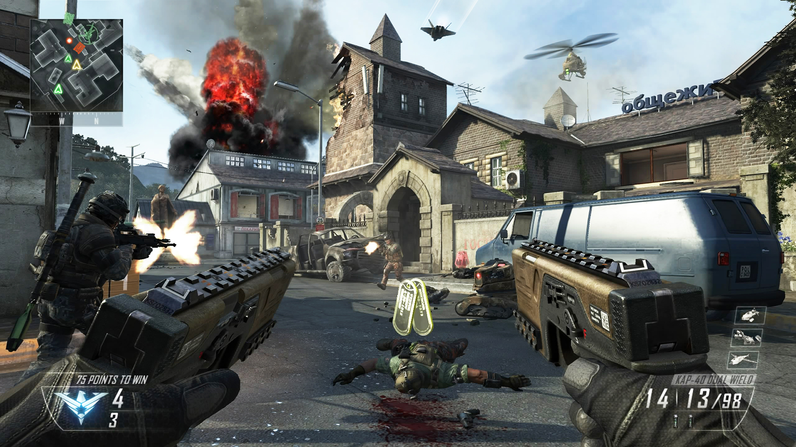

Call Of Dutty Black Ops II
SINOPSIS
"El juego inicia en los años 80 durante la Guerra Fría, esto con el fin de centrarse en el origen de la historia del principal antagonista de Black Ops II, Raúl Menéndez; que, en 2025, es él quien provoca la guerra entre China y EEUU. En la línea temporal de 1980, el protagonista es Alex Mason, quien también lo era en Black Ops. Frank Woods, otro de los personajes de Black Ops, vuelve a este argumento y es además el narrador de la línea temporal de 2025. En la sección de este año el protagonista será David Mason, hijo de Alex.
